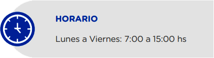
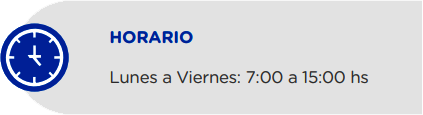
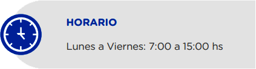

La Secretaría de Prevención de Lavado de Dinero o Bienes - SEPRELAD, es la entidad
gubernamental
encargada de regular las obligaciones, las actuaciones y los procedimientos para prevenir e
impedir la utilización del sistema financiero y de otros sectores de la actividad económica
para
la realización de los actos destinados al lavado de dinero y el financiamiento del
terrorismo.
La SEPRELAD se rige por la Ley Nº 1015/97 “Que previene y reprime los actos ilícitos
destinados a la legitimación de dinero o bienes” y su modificatoria la Ley Nº 3783/09,
en virtud de la cual, se constituye como Unidad de Inteligencia Financiera (UIF) de
la
República del Paraguay, goza de autonomía funcional y administrativa dentro de
los
límites de la ley y de los reglamentos.
FUNCIONES Y ATRIBUCIONES
Son funciones y atribuciones de la SEPRELAD dentro del ámbito de aplicación
que le confiere la
Ley:
Dictar en el marco de las leyes que rigen la materia, los reglamentos de carácter
administrativo que deban observar los sujetos obligados con el fin de evitar, detectar y
reportar las operaciones de lavado de dinero y las operaciones, relacionadas al ámbito
de
aplicación de la presente Ley;
Recabar de las instituciones públicas y de los sujetos obligados toda la información que
pueda tener vinculación con las informaciones analizadas;
Analizar la información obtenida, a fin de determinar transacciones sospechosas, así
como
operaciones o patrones relacionados al ámbito de aplicación de la presente Ley;
Mantener estadísticas del movimiento financiero relacionadas con las informaciones
sometidas
a su competencia;
Disponer la investigación de las operaciones de las cuales se deriven indicios
racionales
de
hechos relacionados con el ámbito de aplicación de la presente Ley;
Elevar al Ministerio Público los casos en que surjan indicios vehementes de la comisión
de
delitos relacionados con el ámbito de aplicación de la presente Ley para que se inicie
la
investigación correspondiente;
Elevar los antecedentes a los órganos e instituciones encargados de supervisar a los
sujetos
obligados cuando se detecten infracciones administrativas a la ley o los reglamentos, a
los
efectos de su investigación y sanción en su caso;
Disponer la reglamentación, supervisión y sanción de los sujetos obligados establecidos
en el
Artículo 13 de la Ley, que no cuenten con entidades reguladoras o supervisores
naturales;
Percibir aranceles en contraprestación de los servicios que esta Secretaria brinde.
Estos
recursos serán destinados a la implementación, operación, desarrollo, mantenimiento y
actualización de los mecanismos destinados a la lucha del lavado de dinero y
financiamiento
del
terrorismo, y;
Recibir y aceptar como fuente de recursos extraordinarios, donaciones y legados de
terceros.
MISION
”Somos una Unidad de Inteligencia
Financiera constituida para regular
y supervisar, capacitada para
recibir, analizar y proporcionar
información relevante a fin de
prevenir y combatir el lavado de
activos, el financiamiento del
terrorismo y de la proliferación de
armas de destrucción masiva, en
beneficio de la economía nacional
y el bienestar de la sociedad.”
VISION
“Ser una Unidad de Inteligencia
Financiera transparente, objetiva e
innovada tecnológicamente, capaz
de articular acciones para prevenir y
generar proactivamente información
útil para el combate al lavado de
activos, el financiamiento del
terrorismo y de la proliferación de
armas de destrucción masiva.”
VALORES
• Proactividad
• Transparencia
• Imparcialidad
• Seguridad
PROPÓSITO INSTITUCIONAL
“Ser una Unidad de Inteligencia
Financiera transparente, objetiva e
innovada tecnológicamente, capaz
de articular acciones para prevenir
y generar proactivamente
información útil para el combate al
lavado de activos, el
financiamiento del terrorismo y de
la proliferación de armas de
destrucción masiva.“

AUTORIDADES
Liliana Alcaraz
Ministra - Secretaria Ejecutiva de la SEPRELAD
Pablo Rojas
Viceministro - Secretario Adjunto de la SEPRELAD
Liliana Elizabeth
Alcaraz Recalde
Ministra - Secretaria Ejecutiva de la SEPRELAD
Formación
Máster en Medicina Legal y Ciencias Forenses
Facultad de Ciencias Médicas
Universidad Nacional de Asunción (UNA)
Especialista en Medicina Legal y Ciencias Forenses
Facultad de Ciencias Médicas
Universidad Nacional de Asunción (UNA)
Especialista en Ciencias Penales
Centro de Ciencias Penales y Política Criminal
Especialista en Justicia Constitucional y Derechos Humanos con
orientación en Justicia Penal y casos Complejos
Instituto para el Desarrollo Constitucional
Universidad de Bolonia
Abogada, Notaria y Escribana Pública
Facultad de Derecho y Ciencias Sociales
Universidad Nacional de Asunción (UNA)
Egresada de la Escuela Judicial
Consejo de la Magistratura, segunda promoción.
Coach ontológico profesional
Escuela Recrearte, Buenos Aires, Argentina.
International Visitor Leader, Leadership Program, United States, Department of State.
Anti Money Laudering certified Associate
Florida Internacional Banker Association
Florida Internacional University.
Ex Becaria de la Agencia de Cooperación Coreana, en Seúl, Corea.
Ex becaria de Ilea
Academia Internacional para el cumplimiento de la Ley, Roswell, Estados Unidos.
Ha culminado el seminario de Evaluadores del GAFILAT en el año 2023.
Perfil
Agente fiscal desde el año 1999 hasta el año 2023.
Ex fiscal delegada de Unidad de Delitos Económicos y Anticorrupción del Ministerio Público de la República del Paraguay.
Ex fiscal delegada de la Unidad de Lavado de Dinero y Financiamiento del Terrorismo del Ministerio Público.
Ex docente del Centro de Entrenamiento del Ministerio Público.
Docente de VIA PRO Desarrollo.
Ex representante de los Agentes Fiscales del Paraguay ante el Consejo Asesor del Ministerio Público (2016 - 2023).
Doctor en Derecho Penal con Premio Extraordinario de Doctorado
enero 2007 - enero 2014
Universidad de Salamanca, España
Título de Tesis Doctoral: "Tratamiento Jurídico-Penal de los Incrementos Patrimoniales Injustificados en la Función Pública. El Delito de Enriquecimiento Ilícito en la Legislación Paraguaya y su problemática dogmático-constitucional".
Obtuvo la máxima calificación "cum laude" del Tribunal Examinador.
Obtuvo el premio extraordinario de Doctorado en el año 2015 por la Universidad de Salamanca por las aportaciones de la tesis doctoral al área de Derecho Penal.
Abogado
Universidad Nacional de Asunción, Asunción.
Obtuvo la puntuación final de 4,23 con calificación de "Distinguido".
Diplomado en Estudios Avanzados con énfasis en Derecho Penal
enero 2007 - diciembre 2008
Universidad de Salamanca, España
XIX Curso de Especialización en Derecho Penal
Universidad de Salamanca, España
Perfil
Especializado en Derecho Penal, en Recuperación de Activos y el sector público.
Ex Procurador Delegado de la Procuraduría General de la República y encargado de la unidad penal. En cumplimiento de sus funciones: (i) inició la primera demanda civil para la reparación del daño ocasionado por funcionarios corruptos (a sus sucesores de hecho y de derecho), y (ii) inició las primeras acciones dirigidas contra terceros sobre bienes adquiridos con dinero originado de actividades ilícitas de corrupción.
Especialista y punto focal de Paraguay en recuperación de activos por la Oficina de la Naciones Unidas para la Droga y el Delito (UNODC).
Ha participado del equipo jurídico que defendió al Paraguay en los siguientes litigios internacionales:
Arrom y Martí vs. Paraguay ante la Corte Interamericana de Derechos Humanos.
Noguera vs. Paraguay ante la Corte Interamericana de Derechos Humanos.
Ríos Ávalos y otros vs. Paraguay ante la Corte Interamericana de Derechos Humanos.
Alejandro Nissen vs. Paraguay ante la Corte Interamericana de Derechos Humanos.
Arbitraje Internacional Seviam vs. MOPC ante International Chamber of Commerce (sede Asunción).
LEY N° 5.189 / 2014
QUE ESTABLECE LA OBLIGATORIEDAD DE LA PROVISIÓN DE INFORMACIONES EN EL USO DE LOS RECURSOS
PÚBLICOS SOBRE REMUNERACIONES Y OTRAS RETRIBUCIONES ASIGNADAS AL SERVIDOR PÚBLICO DE LA
REPÚBLICA DEL PARAGUAY
El nuevo modelo de rendición de cuentas se desarrolla en base a la metodología
establecida en el manual aprobado por el Decreto Nº 2991/19, que encarga a las
autoridades de las instituciones del Poder Ejecutivo, a impulsar actividades de
rendición sobre su gestión, dirigidos al sujeto destinatario del servicio (el ciudadano),
de forma sencilla, amigable y en forma constante, motivando su colaboración en los
procesos de toma de decisiones.
La coordinación de las acciones recae sobre el Comité de Rendición de Cuentas al
Ciudadano (CRCC), instancia constituida en las instituciones, con la misión de elaborar
el plan de rendición de cuentas institucional y gestionar los
mecanismos necesarios para dar avances al mismo, con la colaboración activa y
coordinada de todos sus miembros.
El CRCC tiene el encargo de elaborar informes parciales periódicos y un informe final,
con sus respetivas evidencias, que se ponen a disposición de la ciudadanía para el
libre acceso y control.
La Secretaría Nacional Anticorrupción es la institución encargada de reglamentar
y supervisar los procedimientos a fin promover el cumplimiento efectivo de las
acciones de rendición orientados al ciudadano.
Este Portal permite denunciar supuestos hechos de
corrupción que afectan a Instituciones Públicas, cometidos por funcionarios dependientes del
poder ejecutivo, e Instituciones adheridas al portal por convenio con la SENAC. Es el
compromiso que tiene el Gobierno Nacional en la lucha contra la corrupción.
Las
denuncias deberán ser realizadas
de forma responsable y razonable, contar con datos verosímiles que permitan hacer una
verificación de lo denunciado, caso contrario no serán procesadas. Sólo serán atendidas
denuncias sobre hechos de corrupción.
“La Corrupción es el abuso de un
poder delegado para la obtención de beneficios indebidos”
Acceso y uso exclusivo de funcionarios de la SENAC y
de funcionarios de las Unidades de Transparencia y Anticorrupción UTAs de las
instituciones del Poder Ejecutivo y de las instituciones que posean convenio con la
SENAC y que cuentan con ususarios habilitados por la SENAC. Sirve para la gestión de
denuncias, registro y actualización de los casos de supuestos hechos de corrupción e
irregularidades administartivas, comunicación con el denunciante según el caso y
comunciación SENAC/UTA - UTA/SENAC.
ATENCIÓN A LA CIUDADANÍA, SUJETOS OBLIGADOS, INSTITUCIONES NACIONALES Y EXTRANJERAS
EPORANDÚ
PREGUNTAS FRECUENTES
¿Cuáles son los requisitos para la inscripción?
¿Quiero hacer el seguimiento de mi solicitud y saber porque no me envían mi registro aún?
¿Quién es el oficial de cumplimiento, ustedes me pueden decir quien es mi OC?
¿Cuánto es el canon para OSFL?
¿Cuáles son los requisitos para la inscripción?
¿Qué es Canon? ¿Qué es arancel?
¿Qué es SIRO?
¿Que pasos se deben seguir para enviar informes?
CAPACITACIÓN Y ASISTENCIA TÉCNICA:
Información sobre programas de capacitación y asistencia técnica ofrecidos por la UIF
a los sujetos obligados. Calendario de Actividades: Socialización y cursos
específicos
del CECAD.
FALTAN DATOS DE SEPRELAD
MATERIALES DE SOCIALIZACIÓN Y CAPACITACIÓN DISPONIBLES
Información sobre programas de capacitación y asistencia
técnica ofrecidos por la UIF a los sujetos obligados. Calendario de
Actividades: Socialización y cursos específicos del CECAD
FALTAN DATOS DE SEPRELAD
GUÍAS Y MANUALES
Guías prácticas, manuales y herramientas para que los sujetos
obligados puedan cumplir con sus obligaciones de manera efectiva.
Lavado de Activos (LA) El Lavado de Activos es el proceso a través del cual es encubierto el
origen de los fondos generados mediante el ejercicio de algunas actividades ilegales o
criminales (por ejemplo narcotráfico, contrabando de armas, corrupción, desfalco, crímenes de
guante blanco, extorsión, secuestro, piratería etc.). El objetivo de la operación, que
generalmente se realiza en varios niveles, consiste en hacer que los fondos o activos obtenidos
a través de actividades ilícitas aparezcan como el fruto de actividades legítimas y circulen sin
problema en el sistema financiero.
Incremento de depósitos realizados en un
periodo específico.
Inconsistencia entre declaraciones ante la
administración tributaria y movimientos en el
sistema financiero.
Falta de correspondencia entre las
operaciones y el perfil del cliente.
Imposibilidad de determinar el origen lícito
de los fondos.
Utilización de dinero en efectivo.
Publicaciones periodísticas negativas.
Utilización de títulos de crédito emitidos a
favor de organizaciones.
Desembolso de sumas de dinero sin
justificación legal.
Depósitos realizados en cuentas de
particulares sin las documentaciones
respaldatorias correspondientes.
Movimientos de sumas elevadas de dinero
por parte de las sociedades constituidas para
la importación y exportación de vehículos.
Sociedades constituidas con un capital
relativamente bajo que se vieron
incrementadas sustancialmente en un corto
plazo.
Falta de correspondencia entre los montos
declarados ante la administración tributaria y
los movimientos de dinero realizados a través
del sistema financiero.
Depósitos realizados en el sistema financiero
sin justificación suficiente.
Suscripción de títulos de crédito sin respaldo
documental suficiente.
Indeterminación de la actividad económica
que respalde los movimientos financieros.
Inconsistencia entre los montos remesados
por medio del sistema financiero y la actividad
comercial de las personas jurídicas utilizadas
en la estructura.
Movimientos multimillonarios realizados por
empresas de poca rentabilidad y con actividad
comercial nula.
Falta de correspondencia entre la actividad
económica de las personas jurídicas y los
montos canalizados por medio del sistema
financiero.
RECURSOS MULTIMEDIA
VIDEOS INFORMATIVOS
Brief con información necesitamos
FALTAN DATOS DE SEPRELAD
INFOGRAFÍAS
Consejos y recomendaciones para que las personas y las empresas puedan prevenir el
LA/FT
en su vida cotidiana.
FALTAN DATOS DE SEPRELAD
PRESENTACIONES
Brief con información necesitamos
FALTA LISTADO QUE DEBE PASAR SEPRELAD
 
